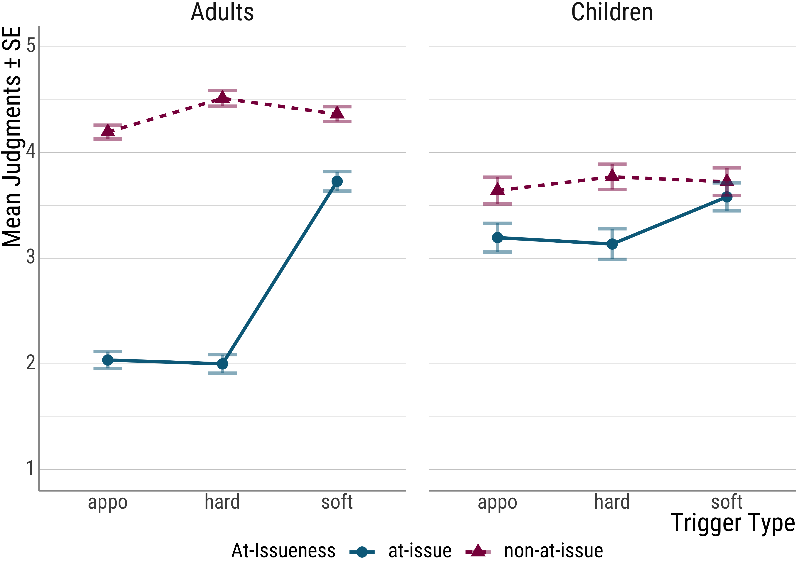

6 Loose ends
6.1 Long computation times
With complex LMMs and with the likelihood ratio method for obtaining \(p\)-values, it often takes quite a while to get your results.
It simply takes time to fit all of the models.
However, this is a good situation for using parallel processing. With this approach, your computer, which likely has several cores in the CPU, will use all of the available cores, instead of just using 1.
For example, my computer I am preparing this script on has 4 cores. Ideally, using parallel processing you might get your results four times as fast.
Just remember to stop the cluster after you’re done.
library(parallel)
# enable parallel processing
(nc <- detectCores())## [1] 4cl <- makeCluster(rep("localhost", nc))
afex_lmm <- mixed(
judgment ~ stage * issue * trigger_cat + (issue + trigger_cat | id) +
(issue | itemid),
data = d_psp,
method = "LRT",
expand_re = TRUE,
REML = FALSE,
check_contrasts = TRUE,
control = lmerControl(optCtrl = list(maxfun = 1e6), optimizer = "bobyqa"),
cl = cl
)## Contrasts set to contr.sum for the following variables: stage, issue, trigger_cat, id, itemidstopCluster(cl)6.2 Convergence Issues
It is unfortunately quite common to run into convergence issues, which means that that lm4e, which afex::mixed() calls under the hood, could not estimate the the values from your data.
Here’s an example (where I just use a portion of the data):
set.seed(1111)
# sample a fourth of the data
d_psp_short <- sample_n(d_psp, length(d_psp$id) / 4)
# does not converge and is singular
afex_lmm_fails <- lmer(
judgment ~ stage * issue * trigger_cat + (issue * trigger_cat | id) +
(issue + stage | itemid),
data = d_psp_short,
)## boundary (singular) fit: see help('isSingular')## Warning: Model failed to converge with 1 negative eigenvalue: -6.9e-03Sometimes, the only way out of this is to increase the amount of observations.
Luckily, sometimes other approaches work.
6.2.1 Optimizers
To estimate the random intercepts and slopes, an optimizer function is used. afex lists the following:
## [1] "bobyqa" "Nelder_Mead" "optimx" "nloptwrap" "nmkbw"Sometimes, a different optimizer can help with convergence issues, but it is quite cumbersome to go through all of them together. afex includes the all_fit option for this reason (as well as a separate function, which I ignore here).
Let’s see what happens here:
# needs to be loaded explicitly to give us access to two more optimizing algorithms
library(optimx)
psp_lm <- lmer(
judgment ~ stage * issue * trigger_cat +
(issue + trigger_cat | id) + (issue | itemid),
data = d_psp
)
psp_lm_all <- allFit(
psp_lm,
maxfun = 1e6,
parallel = "multicore",
ncpus = detectCores()
)## Loading required namespace: dfoptimAnd here we can check for convergence. You are looking for optimizers where it says “NULL”. These are the ones without issues.
psp_lmm_all_ok <- psp_lm_all[sapply(psp_lm_all, is, "merMod")]
lapply(psp_lmm_all_ok, function(x) x@optinfo$conv$lme4$messages)## $bobyqa
## NULL
##
## $Nelder_Mead
## [1] "unable to evaluate scaled gradient"
## [2] "Model failed to converge: degenerate Hessian with 1 negative eigenvalues"
##
## $nlminbwrap
## NULL
##
## $`optimx.L-BFGS-B`
## [1] "unable to evaluate scaled gradient"
## [2] "Model failed to converge: degenerate Hessian with 1 negative eigenvalues"
##
## $nloptwrap.NLOPT_LN_NELDERMEAD
## NULL
##
## $nloptwrap.NLOPT_LN_BOBYQA
## NULLFor more details on this approach, you can have a look at the lovely tutorial here: https://joshua-nugent.github.io/allFit/
6.2.2 Reducing the random effects structure
One other option is to reduce the random effects structure. As you might have noticed, I could have fit a more complex model given the way that my data are set up.
For example, I could have included by-participant random slopes that included the interaction between at-issueness and trigger type. In addition, I could have included the age group as a random slope for the items plus the interaction with at-issueness.
Let’s see how this goes:
# re-enable the cluster
nc <- detectCores()
cl <- makeCluster(rep("localhost", nc))
psp_lmm_all_more <- mixed(
judgment ~ stage * issue * trigger_cat + (issue * trigger_cat | id) +
(stage * issue | itemid),
data = d_psp,
method = "LRT",
expand_re = TRUE,
REML = FALSE,
check_contrasts = TRUE,
all_fit = TRUE,
cl = cl
)## Contrasts set to contr.sum for the following variables: stage, issue, trigger_cat, id, itemidstopCluster(cl)
summary(psp_lmm_all_more)## Linear mixed model fit by maximum likelihood . t-tests use Satterthwaite's method ['lmerModLmerTest']
## Formula: judgment ~ stage * issue * trigger_cat + (1 + re1.issue1 + re1.trigger_cat1 +
## re1.trigger_cat2 + re1.issue1_by_trigger_cat1 + re1.issue1_by_trigger_cat2 |
## id) + (1 + re2.stage1 + re2.issue1 + re2.stage1_by_issue1 | itemid)
## Data: data
## Control: ctrl
##
## AIC BIC logLik deviance df.resid
## 5014.2 5252.4 -2463.1 4926.2 1618
##
## Scaled residuals:
## Min 1Q Median 3Q Max
## -3.54791 -0.52090 0.09529 0.58183 3.06576
##
## Random effects:
## Groups Name Variance Std.Dev. Corr
## id (Intercept) 0.2892336 0.537804
## re1.issue1 0.0283392 0.168342 0.328
## re1.trigger_cat1 0.0311125 0.176387 -0.073 -0.075
## re1.trigger_cat2 0.0384941 0.196199 -0.133 0.564 0.189
## re1.issue1_by_trigger_cat1 0.0129534 0.113813 0.072 0.257 0.675 -0.186
## re1.issue1_by_trigger_cat2 0.0219820 0.148263 0.233 0.453 0.129 0.891 -0.352
## itemid (Intercept) 0.0273469 0.165369
## re2.stage1 0.0019542 0.044206 0.003
## [ reached getOption("max.print") -- omitted 3 rows ]
## Number of obs: 1662, groups: id, 56; itemid, 30
##
## Fixed effects:
## Estimate Std. Error df t value Pr(>|t|)
## (Intercept) 3.503822 0.083490 67.430158 41.9671 < 0.00000000000000022 ***
## stage1 -0.025757 0.078207 58.324547 -0.3293 0.7430731
## issue1 -0.541921 0.041008 39.608389 -13.2151 0.00000000000000042 ***
## trigger_cat1 -0.238799 0.061440 36.046547 -3.8867 0.0004185 ***
## trigger_cat2 -0.111185 0.062935 37.828248 -1.7667 0.0853518 .
## stage1:issue1 -0.335417 0.037886 48.658274 -8.8533 0.00000000001037412 ***
## stage1:trigger_cat1 -0.125717 0.045644 50.739733 -2.7543 0.0081446 **
## stage1:trigger_cat2 -0.092144 0.047017 53.432857 -1.9598 0.0552428 .
## issue1:trigger_cat1 -0.109553 0.050163 29.788884 -2.1839 0.0369781 *
## issue1:trigger_cat2 -0.235881 0.052398 32.017009 -4.5017 0.00008392491146185 ***
## stage1:issue1:trigger_cat1 -0.093858 0.045048 41.377588 -2.0835 0.0434234 *
## stage1:issue1:trigger_cat2 -0.121355 0.047083 43.329337 -2.5775 0.0134367 *
## ---
## Signif. codes: 0 '***' 0.001 '**' 0.01 '*' 0.05 '.' 0.1 ' ' 1
##
## Correlation of Fixed Effects:
## (Intr) stage1 issue1 trgg_1 trgg_2 stg1:1 st1:_1 st1:_2 is1:_1 is1:_2 s1:1:_1
## stage1 -0.180
## issue1 0.180 0.030
## trigger_ct1 -0.028 0.005 -0.022
## trigger_ct2 -0.045 0.012 0.146 -0.386
## stage1:iss1 0.052 0.138 -0.344 0.002 -0.025
## stg1:trgg_1 0.006 -0.035 0.004 -0.178 0.056 -0.022
## stg1:trgg_2 0.016 -0.075 -0.035 0.056 -0.174 0.193 -0.288
## [ reached getOption("max.print") -- omitted 4 rows ]
## optimizer (bobyqa) convergence code: 0 (OK)
## boundary (singular) fit: see help('isSingular')If you look at the very bottom of the summary, you will see that the model, while it did converge, is singular.
You can get a little bit more detail about this generally by using ?isSingular.
Here’s another example with the smaller data set:
# converges, but singular
afex_lmm_failsnomore <- lmer(
judgment ~ stage * issue * trigger_cat + (issue + trigger_cat | id) +
(issue | itemid),
data = d_psp_short
)## boundary (singular) fit: see help('isSingular')summary(afex_lmm_failsnomore) # look at all the correlations that are |1| for the random effects!## Linear mixed model fit by REML. t-tests use Satterthwaite's method ['lmerModLmerTest']
## Formula: judgment ~ stage * issue * trigger_cat + (issue + trigger_cat | id) + (issue | itemid)
## Data: d_psp_short
##
## REML criterion at convergence: 1266.7
##
## Scaled residuals:
## Min 1Q Median 3Q Max
## -3.17805 -0.61351 0.06361 0.62023 2.46714
##
## Random effects:
## Groups Name Variance Std.Dev. Corr
## id (Intercept) 0.215371791 0.4640817
## issuenon-at-issue 0.000021259 0.0046107 -1.000
## trigger_cathard 0.004377732 0.0661644 1.000 -1.000
## trigger_catsoft 0.019594910 0.1399818 1.000 -1.000 1.000
## itemid (Intercept) 0.145338001 0.3812322
## issuenon-at-issue 0.071541585 0.2674726 -1.000
## Residual 1.012501261 1.0062312
## Number of obs: 415, groups: id, 56; itemid, 30
##
## Fixed effects:
## Estimate Std. Error df t value Pr(>|t|)
## (Intercept) 2.06151 0.21113 43.86189 9.7642 0.0000000000014346 ***
## stageChildren 0.90548 0.29775 115.77287 3.0411 0.0029162 **
## issuenon-at-issue 2.12111 0.24680 99.43875 8.5945 0.0000000000001221 ***
## trigger_cathard 0.12879 0.29207 42.30048 0.4409 0.6614995
## trigger_catsoft 1.45050 0.29225 45.25846 4.9632 0.0000102757442677 ***
## stageChildren:issuenon-at-issue -1.36049 0.37830 301.40893 -3.5964 0.0003769 ***
## stageChildren:trigger_cathard 0.38819 0.37440 315.17880 1.0368 0.3006034
## stageChildren:trigger_catsoft -0.57392 0.40621 304.29366 -1.4129 0.1587130
## issuenon-at-issue:trigger_cathard 0.30971 0.35831 99.74995 0.8644 0.3894596
## issuenon-at-issue:trigger_catsoft -1.23615 0.35565 100.76895 -3.4758 0.0007528 ***
## stageChildren:issuenon-at-issue:trigger_cathard -0.99467 0.52659 326.10431 -1.8889 0.0597950 .
## stageChildren:issuenon-at-issue:trigger_catsoft 0.53582 0.53992 345.53739 0.9924 0.3216974
## ---
## Signif. codes: 0 '***' 0.001 '**' 0.01 '*' 0.05 '.' 0.1 ' ' 1
##
## Correlation of Fixed Effects:
## (Intr) stgChl issn-- trggr_cth trggr_cts stC:-- stgChldrn:trggr_cth stgChldrn:trggr_cts
## stageChldrn -0.488
## issunn-t-ss -0.652 0.337
## trggr_cthrd -0.604 0.269 0.470
## trggr_ctsft -0.591 0.256 0.467 0.453
## stgChldr:-- 0.306 -0.668 -0.588 -0.221 -0.215
## stgChldrn:trggr_cth 0.296 -0.636 -0.268 -0.503 -0.226 0.530
## stgChldrn:trggr_cts 0.261 -0.555 -0.241 -0.208 -0.469 0.478 0.480
## issnn-t-ss:trggr_cth issnn-t-ss:trggr_cts stgChldrn:ssnn-t-ss:trggr_cth
## stageChldrn
## issunn-t-ss
## trggr_cthrd
## trggr_ctsft
## stgChldr:--
## stgChldrn:trggr_cth
## stgChldrn:trggr_cts
## [ reached getOption("max.print") -- omitted 4 rows ]
## optimizer (nloptwrap) convergence code: 0 (OK)
## boundary (singular) fit: see help('isSingular')While this is not a convergence issue, it is one that will often come up. The general take-away from this is the same (with some qualifications): if it can be avoided, you should reduce the random effects structure.
Again, with the smaller data set, this approach works:
afex_lmm_works <- lmer(
judgment ~ stage * issue * trigger_cat + (1 | id) +
(1 | itemid),
data = d_psp_short
)
summary(afex_lmm_works)## Linear mixed model fit by REML. t-tests use Satterthwaite's method ['lmerModLmerTest']
## Formula: judgment ~ stage * issue * trigger_cat + (1 | id) + (1 | itemid)
## Data: d_psp_short
##
## REML criterion at convergence: 1270.9
##
## Scaled residuals:
## Min 1Q Median 3Q Max
## -3.080273 -0.531239 0.058106 0.642952 2.457750
##
## Random effects:
## Groups Name Variance Std.Dev.
## id (Intercept) 0.27846 0.52769
## itemid (Intercept) 0.06076 0.24650
## Residual 1.03276 1.01625
## Number of obs: 415, groups: id, 56; itemid, 30
##
## Fixed effects:
## Estimate Std. Error df t value Pr(>|t|)
## (Intercept) 2.05319 0.19620 117.89195 10.4649 < 0.00000000000000022 ***
## stageChildren 0.87941 0.30087 260.35883 2.9229 0.0037729 **
## issuenon-at-issue 2.11644 0.23693 365.85855 8.9326 < 0.00000000000000022 ***
## trigger_cathard 0.10036 0.26016 113.37339 0.3858 0.7003899
## trigger_catsoft 1.44762 0.26008 117.66123 5.5660 0.0000001666 ***
## stageChildren:issuenon-at-issue -1.31689 0.38629 323.00333 -3.4091 0.0007343 ***
## stageChildren:trigger_cathard 0.42128 0.36773 374.28221 1.1456 0.2526873
## stageChildren:trigger_catsoft -0.52961 0.39808 370.01180 -1.3304 0.1841979
## issuenon-at-issue:trigger_cathard 0.34551 0.34100 366.23042 1.0132 0.3116124
## issuenon-at-issue:trigger_catsoft -1.22104 0.33702 362.15312 -3.6230 0.0003328 ***
## stageChildren:issuenon-at-issue:trigger_cathard -0.99948 0.53637 342.75470 -1.8634 0.0632594 .
## stageChildren:issuenon-at-issue:trigger_catsoft 0.46360 0.54645 359.20912 0.8484 0.3967970
## ---
## Signif. codes: 0 '***' 0.001 '**' 0.01 '*' 0.05 '.' 0.1 ' ' 1
##
## Correlation of Fixed Effects:
## (Intr) stgChl issn-- trggr_cth trggr_cts stC:-- stgChldrn:trggr_cth stgChldrn:trggr_cts
## stageChldrn -0.554
## issunn-t-ss -0.521 0.352
## trggr_cthrd -0.592 0.312 0.392
## trggr_ctsft -0.597 0.313 0.390 0.450
## stgChldr:-- 0.324 -0.632 -0.631 -0.245 -0.240
## stgChldrn:trggr_cth 0.339 -0.637 -0.288 -0.577 -0.258 0.516
## stgChldrn:trggr_cts 0.315 -0.579 -0.262 -0.238 -0.533 0.469 0.476
## issnn-t-ss:trggr_cth issnn-t-ss:trggr_cts stgChldrn:ssnn-t-ss:trggr_cth
## stageChldrn
## issunn-t-ss
## trggr_cthrd
## trggr_ctsft
## stgChldr:--
## stgChldrn:trggr_cth
## stgChldrn:trggr_cts
## [ reached getOption("max.print") -- omitted 4 rows ]6.3 Investigating interactions and pairwise comparisons
Often, it is ill-advised to just stop after you have the significance data from your linear mixed model.
This is often true in the presence of interactions, where the interpretation of the main effects gets much harder.
In the case at hand, for example, the main effect for at-issueness is driven by the difference between hard and soft triggers in the at-issue condition.
Of course, this can be inferred visually in a plot, but it is good to confirm these suspicions with follow-up tests of the statistical type as well.

Another circumstance where follow-up analyses are important concerns post hoc analysis e.g., for predictors with more than two levels. To refresh your memory, here is the result of the LMM:
anova(psp_lmm)## Mixed Model Anova Table (Type 3 tests, LRT-method)
##
## Model: judgment ~ stage * issue * trigger_cat + (issue + trigger_cat |
## Model: id) + (issue | itemid)
## Data: d_psp
## Df full model: 26
## Df Chisq Chi Df Pr(>Chisq)
## stage 25 0.1026 1 0.74872743
## issue 25 69.0498 1 < 0.000000000000000222 ***
## trigger_cat 24 22.3172 2 0.000014252140351343 ***
## stage:issue 25 57.6565 1 0.000000000000031213 ***
## stage:trigger_cat 24 15.1527 2 0.00051244 ***
## issue:trigger_cat 24 33.5860 2 0.000000050920357821 ***
## stage:issue:trigger_cat 24 34.5869 2 0.000000030870781952 ***
## ---
## Signif. codes: 0 '***' 0.001 '**' 0.01 '*' 0.05 '.' 0.1 ' ' 1Remember that the factor Trigger Type has three levels: soft triggers, hard triggers, and non-restrictive relative clauses.
Question: Why is this a problem again?
To remedy this, we can make use of so-called estimated marginal means and run follow-up tests. All of the necessary tools can be found in the emmeans package (Lenth 2019):
library(emmeans)Other people do this differently, and simply run a series of \(t\)-tests on their original data and correct for multiple testing.
We will not pursue this direction here, however. There are several (I believe good) reasons why:
- If you run \(t\)-tests on only a portion of the data, you lose statistical power. Why? Because we reduce the number of observations that we take into account.
- We already computed a model that took into account all the data and which estimated the variances using a random effects structure we thought matched our data. Why would we want to downgrade from this by using a \(t\)-test?
- LMMs are pretty good when the design is unbalanced or when the data are nested. The \(t\)-test does not have these advantages.
So, what will the estimated marginal means approach do for us?
In effect, we will use predicted values from our linear mixed model (rather than the raw data) and compute or follow-up analyses on those.
These comparisons will also be \(t\)-tests, but since were using the estimates from our LMM, we get the best of both worlds.
First, we need to create an object from our LMM that emmeans can deal will. To do this, we use the following code:
# post hoc tests
(ref_id <-
emmeans(
psp_lmm,
specs = c("stage", "trigger_cat", "issue"),
lmer.df = "satterthwaite"
))## stage trigger_cat issue emmean SE df lower.CL upper.CL
## Adults appo at-issue 2.03 0.149 72.6 1.74 2.33
## Children appo at-issue 3.20 0.176 79.0 2.84 3.55
## Adults hard at-issue 2.04 0.155 71.0 1.73 2.34
## Children hard at-issue 3.19 0.182 77.7 2.82 3.55
## Adults soft at-issue 3.73 0.157 73.0 3.41 4.04
## Children soft at-issue 3.59 0.187 78.4 3.22 3.96
## Adults appo non-at-issue 4.19 0.130 70.4 3.93 4.45
## Children appo non-at-issue 3.64 0.155 75.7 3.33 3.95
## Adults hard non-at-issue 4.51 0.125 70.3 4.26 4.76
## Children hard non-at-issue 3.80 0.148 76.5 3.51 4.10
## [ reached getOption("max.print") -- omitted 2 rows ]
##
## Degrees-of-freedom method: satterthwaite
## Confidence level used: 0.95What we see above are the estimated values for the all of the conditions, including the estimated variance and the degrees of freedom.
Then, we need to type in which comparisons interest us. In this case, I compare the non-restrictive relative clauses and the hard triggers for the adults.
We do this by sum-coding the comparisons (all the effects with the 0 are ignored):
# at-issue: NRRC v hard adults
hard_appo_at_a <- c(-1, 0, 1, 0, 0, 0, 0, 0, 0, 0, 0, 0)And then we can run the \(t\)-tests on this contrast (using afex once more).
Below I also added a contrast for non-restrictive relative clauses and hard triggers for the kids for illustrative purposes:
hard_appo_at_c <- c(0, -1, 0, 1, 0, 0, 0, 0, 0, 0, 0, 0)
contrasts_lmm <- contrast(ref_id,
list(
hard_appo_at_a = hard_appo_at_a,
hard_appo_at_c = hard_appo_at_c
),
adjust = "holm"
)
summary(contrasts_lmm)## contrast estimate SE df t.ratio p.value
## hard_appo_at_a 0.00236 0.152 45.3 0.016 1.0000
## hard_appo_at_c -0.00708 0.176 64.0 -0.040 1.0000
##
## Degrees-of-freedom method: satterthwaite
## P value adjustment: holm method for 2 testsconfint(contrasts_lmm)## contrast estimate SE df lower.CL upper.CL
## hard_appo_at_a 0.00236 0.152 45.3 -0.351 0.355
## hard_appo_at_c -0.00708 0.176 64.0 -0.411 0.397
##
## Degrees-of-freedom method: satterthwaite
## Confidence level used: 0.95
## Conf-level adjustment: bonferroni method for 2 estimates6.4 Not recommended: all pairwise comparisons
Above we only looked at specific contrasts, but, you might say now, why don’t we just look at all of the comparisons? After all, we are correcting for multiple tests (using adjust = "holm").
I recommend against testing all possible pairwise comparisons, but I include how to do it here for illustrative purposes:
pairs(ref_id, adjust = "holm")## contrast estimate SE df t.ratio p.value
## (Adults appo at-issue) - (Children appo at-issue) -1.16191 0.210 75.2 -5.533 <.0001
## (Adults appo at-issue) - (Adults hard at-issue) -0.00236 0.152 45.3 -0.016 1.0000
## (Adults appo at-issue) - (Children hard at-issue) -1.15483 0.236 87.0 -4.900 0.0002
## (Adults appo at-issue) - (Adults soft at-issue) -1.69496 0.164 58.6 -10.360 <.0001
## (Adults appo at-issue) - (Children soft at-issue) -1.55652 0.239 94.3 -6.512 <.0001
## (Adults appo at-issue) - (Adults appo non-at-issue) -2.16086 0.139 68.1 -15.560 <.0001
## (Adults appo at-issue) - (Children appo non-at-issue) -1.60567 0.207 88.2 -7.772 <.0001
## (Adults appo at-issue) - (Adults hard non-at-issue) -2.47475 0.145 67.4 -17.017 <.0001
## (Adults appo at-issue) - (Children hard non-at-issue) -1.77128 0.210 120.9 -8.437 <.0001
## (Adults appo at-issue) - (Adults soft non-at-issue) -2.32845 0.172 76.0 -13.563 <.0001
## (Adults appo at-issue) - (Children soft non-at-issue) -1.70842 0.229 131.6 -7.475 <.0001
## (Children appo at-issue) - (Adults hard at-issue) 1.15955 0.234 87.1 4.945 0.0002
## (Children appo at-issue) - (Children hard at-issue) 0.00708 0.176 64.0 0.040 1.0000
## [ reached getOption("max.print") -- omitted 53 rows ]
##
## Degrees-of-freedom method: satterthwaite
## P value adjustment: holm method for 66 testsQuestions: Can you think of some reasons why I do not recommend this kind of analysis?
6.5 More emmeans: Interactions
There is actually quite a lot that emmeans will let you do. One especially interesting function is illustrated here.
For one, we can inspect interactions and check whether lower-order interactions are also present for each level of some factor (here: age group).
Again, this is all based on the large model, so we are working with the model estimates rather than the raw data. And again we start with the matrix of effects:
# inspection of the interactions for each group separately, excluding NNRCS
emm <-
emmeans(
psp_lmm,
~ trigger_cat * issue,
by = c("stage")
)
emm## stage = Adults:
## trigger_cat issue emmean SE df lower.CL upper.CL
## appo at-issue 2.03 0.153 78.2 1.73 2.34
## hard at-issue 2.04 0.160 76.9 1.72 2.35
## soft at-issue 3.73 0.162 78.6 3.41 4.05
## appo non-at-issue 4.19 0.134 76.0 3.93 4.46
## hard non-at-issue 4.51 0.128 75.4 4.25 4.76
## soft non-at-issue 4.36 0.149 76.6 4.07 4.66
##
## stage = Children:
## trigger_cat issue emmean SE df lower.CL upper.CL
## appo at-issue 3.20 0.181 85.2 2.83 3.56
## hard at-issue 3.19 0.188 84.3 2.81 3.56
## soft at-issue 3.59 0.192 84.5 3.21 3.97
## appo non-at-issue 3.64 0.160 82.3 3.32 3.96
## hard non-at-issue 3.80 0.153 83.1 3.50 4.11
## soft non-at-issue 3.74 0.178 80.9 3.39 4.10
##
## Degrees-of-freedom method: kenward-roger
## Confidence level used: 0.95(ints_tests <- joint_tests(emm, by = c("stage")))## stage = Adults:
## model term df1 df2 F.ratio p.value
## trigger_cat 2 45.59 25.760 <.0001
## issue 1 57.37 330.037 <.0001
## trigger_cat:issue 2 60.88 55.077 <.0001
##
## stage = Children:
## model term df1 df2 F.ratio p.value
## trigger_cat 2 60.05 1.285 0.2841
## issue 1 68.55 11.885 0.0010
## trigger_cat:issue 2 119.38 2.134 0.1228Here’s another thing one could do: Because we are not super interested in the non-restrictive relative clauses (they were included as somewhat of a control), we can check what happens to the big interaction when we exclude them.
# inspection of the three-way interaction without NRRCs
emm_threeway <-
emmeans(
psp_lmm,
~ stage:trigger_cat:issue,
at = list(trigger_cat = c("soft", "hard"))
)
(three_way <- joint_tests(emm_threeway))## model term df1 df2 F.ratio p.value
## stage 1 58.94 0.221 0.6403
## trigger_cat 1 46.30 15.706 0.0003
## issue 1 45.02 105.257 <.0001
## stage:trigger_cat 1 60.69 11.567 0.0012
## stage:issue 1 102.34 54.093 <.0001
## trigger_cat:issue 1 32.54 48.972 <.0001
## stage:trigger_cat:issue 1 1317.80 28.498 <.00016.6 Ordinal data
So far, we used linear mixed models for the analysis. However, there are actually good reasons to be cautious here.
Recall that in the experiment we used a Likert-type scale with values from 1 to 5:
While we pretended that we can use the linear mixed models in this case by treating the ordinal data as real numbers, there are good reasons not to do this.
One such reason is that real numbers tend to be equidistant from each other. For ordinal scales, it is not so clear that this is the case.
(For all Germans, think about the differences between the grades in school, and especially the distance from 4 to 5.)
I will not go into the details of why this is such a problem here for the LMM. For the interested people, there’s the following paper: Liddell and Kruschke (2018).
The alternative analysis would require an ordinal (mixed) model, which can be computed in R using the ordinal package (Christensen 2018) with the clmm() (for cumulative link mixed model) function.
6.7 Reporting
Here’s a check list of things to report about your statistical analysis (under the assumption that you’re using a mixed model):
- R plus version and citation
- Mention how you coded categorical variables (treatment, sum, etc.)
- Mention fixed and random effects
- Formula (\(Y \sim \ldots\))
- Table
- Packages including citation (if not base) and corresponding functions
- Plot (please mention which error bars you’re using, ideally in the \(y\)-axis label)
If you want to know how package authors want to have their packages cited, you can do the following and either copy the full citation or copy the entry for you .bib file (if you use some kind of reference manager):
citation("afex")##
## To cite package 'afex' in publications use:
##
## Singmann H, Bolker B, Westfall J, Aust F, Ben-Shachar M (2022). _afex: Analysis of Factorial
## Experiments_. R package version 1.1-1, <https://CRAN.R-project.org/package=afex>.
##
## A BibTeX entry for LaTeX users is
##
## @Manual{,
## title = {afex: Analysis of Factorial Experiments},
## author = {Henrik Singmann and Ben Bolker and Jake Westfall and Frederik Aust and Mattan S. Ben-Shachar},
## year = {2022},
## note = {R package version 1.1-1},
## url = {https://CRAN.R-project.org/package=afex},
## }6.9 Fin!
Thank you so much!